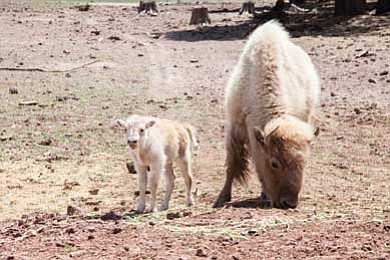

Bison are known for living in the Great Plains, but formerly had a much larger range, including much of the eastern United States and parts of Mexico.
powers of my superHero
- Bison can run faster than horses
- Bison can “plow snow” with their heads
- A wild bison's lifespan is about 25 years

Link of a index